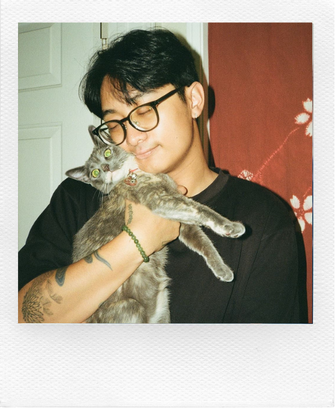

Welcome to my archive!
I'm a builder at heart — passionate about crafting thoughtful digital spaces where technology and people meet.
After discovering the creative side of coding, I've been exploring ways to bridge logic and design to create things that feel intuitive, useful, and maybe a little bit fun.
When I'm not coding or brainstorming projects, you can usually find me: playing story-driven games, sketching new ideas, getting lost in a good film, or hunting down the perfect cup of coffee.